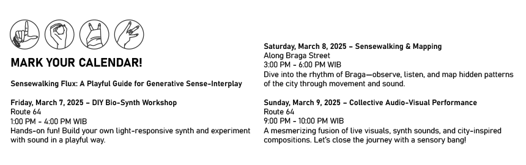

This project unfolds in three phases:
// Sensewalking & Mapping – Participants explore Braga through embodied perception, documenting their experiences through sketches, sound patterns, textures, and bodily sensations. These observations are converted into a graphic score, capturing an intersubjective experience of the city.
// DIY Bio-Synth Workshop – Participants assemble a light-sensitive synthesizer, establishing a connection between visual stimuli and sound.
// Collective Audio-Visual Performance – The generated score serves as a guide for an improvised performance in public space, merging movement, sound, and visual projections into an intersubjective ecology between body, space, and technology
This project highlights spontaneity, perception, and intersubjectivity, fostering an egalitarian interaction between the city and its inhabitants. By positioning the city as a "living instrument," Sensewalking Flux celebrates the unpredictability that emerges from the ecotone between body, space, and technology.
Sensewalking Flux Zine Download
Seeing Beyond Sight: A Sketching Exercise
Sketching is more than just drawing what’s in front of you—it’s a way of learning to see. It trains us to observe details, patterns, and relationships between spaces, objects, and people. Sketching helps us analyze our surroundings, making us more aware of the invisible forces shaping them.
As Norman Crowe and Paul Laseau put it,
"Seeing is a necessary prelude to visual expression.”
Eric Jenkins expands on this, explaining that sketching is a bodily interaction:
"It is necessary to learn from the world by engaging in its reality—its materials, its columns, its smells, its temperature.”
But here’s the twist: sketching isn’t just about what’s in front of us.
It’s also about what we feel, remember, and imagine. There are two
ways of sketching:
1. Referential Sketching – recording exactly what you see.
2. Analytical Sketching – capturing movement, patterns,
and sensations beyond the visual.
Pathways Mapping
Exercise 1: Footwork – Mapping the Unseen Movements
Every step tells a story. Movements—whether human, animal, or even mechanical—shape the rhythm of a place. Let’s capture these unseen patterns through sketching.
Try this:
// Find a space where people (or creatures) are moving—maybe a busy street, a park, or a café.
// Observe the movement. Where do people walk? Where do the pause?
// Now, sketch the movement—not the people themselves, but the pathways they create.
// Can you show the difference between a steady walk, a hesitant pause, or a sudden sprint?
// What would movement sound like if it were a shape?
Exercise 1: Footwork – Mapping the Unseen Movements
Tuning In: Listening to Space
"Architecture shapes sound, and sound shapes architecture."
– Lupton (2018)
Sound surrounds us in ways sight cannot. Close your eyes in a crowded café, a marketplace, or a quiet alley. The city hums, murmurs, clicks, and echoes. It reverberates against buildings, dissolves into the wind, or lingers in forgotten corners.
Exercise 2 - Tuning In – Drawing with Your Ears
Listen deeply. Can you see a space just by listening?
Try this:
// Choose a spot to sit or stand. Close your eyes. Just listen.
// Start documenting the sounds—write them down, sketch their shapes, or record them as voice notes.
// What’s the loudest sound? The quietest?
// Can you feel vibrations in the ground? In your body?
// If sound had a texture, what would it be? Smooth? Rough? Fuzzy?
Exercise 2 - Tuning In – Drawing with Your Ears
Smellscapes: Mapping Invisible Memories
Smell is the most unnoticed but memorable sense. A single scent can transport you back in time—a childhood home, a street market in another city, the salty breeze of a distant beach.
Pallasmaa calls this the “space of smell”, where scent engraves itself into our perception of place. In urban design, scent can reveal the history and character of a space, influencing how we navigate it.
Exercise 3: Smell Notes – The City’s Invisible Layers
Try this:
// Take a slow walk and focus only on smell. What do you notice?
// Are the smells pleasant or unpleasant? Do they remind you of something?
// Where do certain scents appear and disappear?
// How does smell shape your experience of a place?
Pro tip:
Try mapping your journey using only smells. Imagine drawing the city with scent trails instead of streets.
Exercise 3: Smell Notes – The City’s Invisible Layers
Taste Rave: Flavors of the City
Taste is a multi-sensory experience. It’s not just about flavor—it’s about texture, temperature, smell, and even sound (think of the crunch of chips or the fizz of soda).
We often say we "eat our way through a city", and for good reason—food plays a major role in how we experience urban life.
Exercise 4: Taste Rave – Sensing with Your Tongue
Try this:
// Pick three foods—bonus points if they’re new to you!
// Before eating, observe: What do they smell like? Feel like? Look like?
// Close your eyes as you take a bite. What textures do you notice?
// Does the taste remind you of another place or memory?
// Can you describe the flavor using words, colors, or even a drawing?
Exercise 4: Taste Rave – Sensing with Your Tongue
Texture Impressions: Feeling Space with Your Skin
"Touch is the mother of all senses."
– Pallasmaa (2005)
Touch is how we first experience the world. Before we see clearly, we feel. Spaces aren’t just visual compositions—they have textures, temperatures, and sensations that define how we experience them.
Buildings aren’t just shapes; they’re warm, cool, rough, smooth, grainy, or metallic. Our skin sees just as much as our eyes.
Exercise 5: Texture Impressions – Reading with Your Hands
Try this:
// Find different surfaces—walls, fabrics, tree bark, metal, glass.
// Close your eyes. Run your hands over them. What do they feel like?
// Can you describe the textures in words?
// If you were to draw this feeling, what would it look like?
Exercise 5: Texture Impressions – Reading with Your Hands
Final Thoughts: What Did You Discover?
Sensewalking Flux isn’t about finding something specific—it’s about noticing what’s already there.
Every sense tells a different story of the city, and together, they create an experience that goes beyond just looking.
Some final prompts to reflect on:
// Did you notice something today that you had never paid attention to before?
// How did different senses shape your perception of a place?
// Did mapping movement, sound, smell, or texture change how you understand the city?
// If you could create a map that isn’t based on streets, what would you include?
Sensewalking is a way of tuning in—to the city, to others, and to yourself. Keep sensing, keep walking, and keep rediscovering the world around you.
DIY Bio-Synth Workshop
Let’s Make the City Sing!
Before we dive into the partiture of Braga, we need a way to translate the unseen—light, movement, and energy—into something we can hear. That’s where DIY Bio-Synths come in!
What’s a Bio-Synth?
Think of it as a tiny electronic creature that listens to the world in ways we can’t. Instead of using a microphone, it captures light intensity and turns it into sound. The brighter the light, the louder or higher the pitch—kind of like the city humming its own tune!
What We’ll Do
// Assemble Your Synth – We’ll guide you through building a simple bio-synth using sensors, circuits, and a bit of magic.
// Experiment with Light & Sound – Wave your hands, block the light, or let the sunset play its own melody.
// Prepare for Collective Composition – The bio-synths will later be used in Phase 3, where we’ll translate the sensewalking partiture into a live sound performance.
Why This Matters?
This isn’t just about making cool noises (though that’s a bonus). It’s about expanding perception, listening to the environment beyond human senses, and finding new ways to interact with urban space.
Ready to tune in? Let’s build, explore, and make the city sing!
DIY Bio-Synth Instruction Manual
Collective Audio-Visual Performance
Welcome to the Flux!
This is not your usual performance. No set melodies, no fixed rhythms—just you, your hands, and the light-sensitive soundscape we create together. Imagine mapping a city through sound, translating movement into frequencies, and letting light shape our sonic world. Ready to dive in?
How It Works
Each performer holds a transparent acetate sheet with black marker patterns—this is your score. By moving your hands along the drawn paths, you control how much light passes through. These light variations are picked up by DIY synthesizers, which respond through potentiometers or variable resistors, translating gestures into sound.
// More light = Higher frequencies or increased modulation.
// Less light = Lower frequencies or subdued sound.
Meanwhile, the environment is part of the composition. Shadows, external light sources, and movement introduce unexpected shifts. Our live digital processors—one on sound mixing & FX, the other on visuals & LED mapping—shape this real-time dialogue, amplifying the city’s hidden textures into an immersive performance.
Collective Audio-Visual Performance
Composition Structure
Like a city breathing in cycles, the piece unfolds in three evolving phases:
I. PER SENSES – Structured Exploration
Follow the path. Performers closely trace the drawn lines on their acetate sheets. Let your touch guide the light, let the synths whisper what they sense. This phase is about precision, listening, and feeling the city as it is.
II. UNISON – Free Interaction
Loosen up! Break free from strict paths. Explore textures, alter light exposure, interact with the sonic space. The city is alive—let it breathe through you.
III. DISRUPTION – Environmental Interference
External light sources shift, shadows block paths, sudden brightness challenges control. Adapt, respond, and find harmony in the chaos. The composition is no longer just yours—it belongs to the space, to unseen forces at play.
Beyond Sound: Live Processing
Throughout the performance, digital elements enhance the experience:
// Live Sound Engineering – Mixing raw DIY synth outputs, adding textures, effects, and spatial depth.
// Visual & LED Mapping – Reacting to performers’ gestures, transforming light distortions into projected visuals.
You Are Part of the City
Braga is not just a backdrop—it’s the instrument. Through Sensewalking Flux, we dissolve the lines between performer, space, and observer. We play the unseen frequencies of the city, sculpting them into fleeting moments of sound and light.
So, let’s listen with our hands, see with our ears, and move through light.
Let the flux begin!
Sensewalking Flux Documentation
Phase 1 – Sensewalking & Mapping
"Observing Braga through the senses—textures, movements, sounds, and the shifting rhythm of the city."
Braga, Bandung | 8 March 2025


Reflections on Sensewalking Flux
Phase 1: Sensewalking & Mapping
Braga is a living archive of sensations—an intricate choreography of textures, movements, and sonic landscapes. In this phase, participants engaged in analytical sketching, using a structured framework to translate their sensory experiences into visual notations.
Interestingly, observations extended beyond static elements like tree bark or fabric textures; many were drawn to the movement of people—the fluidity of pedestrian rhythms, the micro-gestures of those pausing, waiting, or weaving through the streets. The interplay between overstimulation and stillness emerged as a key theme. A sudden downpour, for example, momentarily shifted the tempo of the environment, creating an unplanned moment of reflection.
Notably, this phase coincided with Ramadhan, adding another layer of sensory awareness. The scent of food lingering in the air became an invisible yet potent presence—highlighting how absence (of taste, in this case) can heighten perception. This interplay between presence and absence, material and immaterial, shaped a deeper understanding of how the body navigates sensory flux.
Sensewalking Flux Documentation
Phase 2 – DIY Bio-Synth Workshop
"Building, tweaking, and experimenting—participants shape sound through circuits and collaboration."
Route 64, Bandung | 7 March 2025
Reflections on Sensewalking Flux
Phase 2: DIY Bio-Synth Workshop
From perceiving to producing—this phase invited participants to engage with sound through hands-on synthesis. The workshop was designed as a structured introduction to DIY electronic instruments, but participants quickly transformed it into a space for collaboration and improvisation.
Rather than merely assembling circuits, many took an experimental approach, testing the limits of their synths—adding, removing, modifying, and reconfiguring components. This iterative process mirrored the unpredictability of sound itself: a circuit glitch became a new sonic texture; an unexpected interaction between components sparked a new idea. In this way, the workshop embodied an open-ended methodology, where learning occurred through tactile engagement, failure, and adaptation.
Sensewalking Flux Documentation
Phase 3 – Collective Audio-Visual Performance
"From scattered sounds to a shared composition—listening, responding, and making Braga resonate."
Route 64, Bandung | 9 March 2025

Reflections on Sensewalking Flux
Phase 3: Collective Audio-Visual Performance
The final phase became an unexpected site of spontaneous participation. Without prior instruction, participants brought personal instruments—a noise box, a guitar, chopsticks, a keyboard—demonstrating an intrinsic desire to extend the workshop into their own creative vocabularies.
This improvisatory sound-making session transformed the city into an active collaborator. Rather than imposing a fixed composition, participants engaged in a dialogue with the space—responding to environmental sounds, each other, and the unpredictable resonances emerging from their instruments. The performance revealed a critical insight: deep listening is not merely receptive but generative; it is a practice of both attunement and intervention.
By the end of Sensewalking Flux, the distinction between observer and participant, listener and performer had blurred. What began as a structured exercise in sensory awareness evolved into a collective exploration of how we experience and reimagine our surroundings.
The question that remains: How will you continue to listen?
Credits: Documentation: Biohaha, BPAF, Daffa, Galih, Zidan, Fickri, Rio, Very
Collaborators: @ridutamalabun, @earth0000000001, @_edwinmay, @biensinhabies, @kazuhita01, @fachry.matlawa